AiSE, AI-enabled editing
- Role
- UX researcher and designer: desirability research lead, sole designer across all three personas
- Product
- AiSE, a workflow inside Acuity Assistant (Word plugin)
- Timeline
- 2 months: research to proof of concept in month 1, development in month 2
- Team
- UX research and design, market researcher, business analyst, product owner, developers
- Status
- Live, with active users
Research reframed the brief from a grammar tool to a compliance-aware editing layer. Design removed the adoption risk before a screen was drawn.
The brief that wasn't a brief
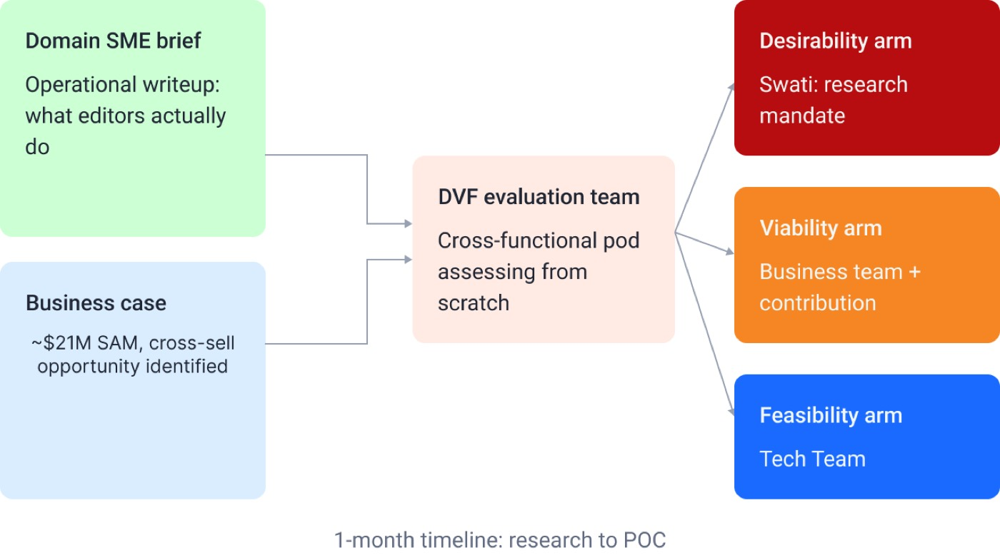
I led the Desirability arm of the DVF evaluation: hypothesis testing, primary research and synthesis. The expert brief was a seed, not a specification. It gave domain grounding, but from one person's vantage point. My job was to test how far it held with people who do the work daily.
One hard constraint: research to proof of concept in a month, with development starting in month two. There was no room for iterative exploratory rounds.
Understanding the work before designing for it
Finding 1: AI is already used, but not trusted to act alone. 8 to 10 of 12 participants, in both cohorts. ChatGPT and Gemini were in informal use, but everyone who mentioned AI also named oversight as a requirement. This was domain caution, not resistance: financial research carries regulatory risk.
Finding 2: a plugin, not a standalone tool. 9 or more of 12 participants wanted it inside Microsoft Word. A new tab, login or interface would add friction.
Users weren't asking AI to replace editorial judgment. They wanted it to handle the repeatable, rule-based checks so their attention could go to decisions that need domain expertise.
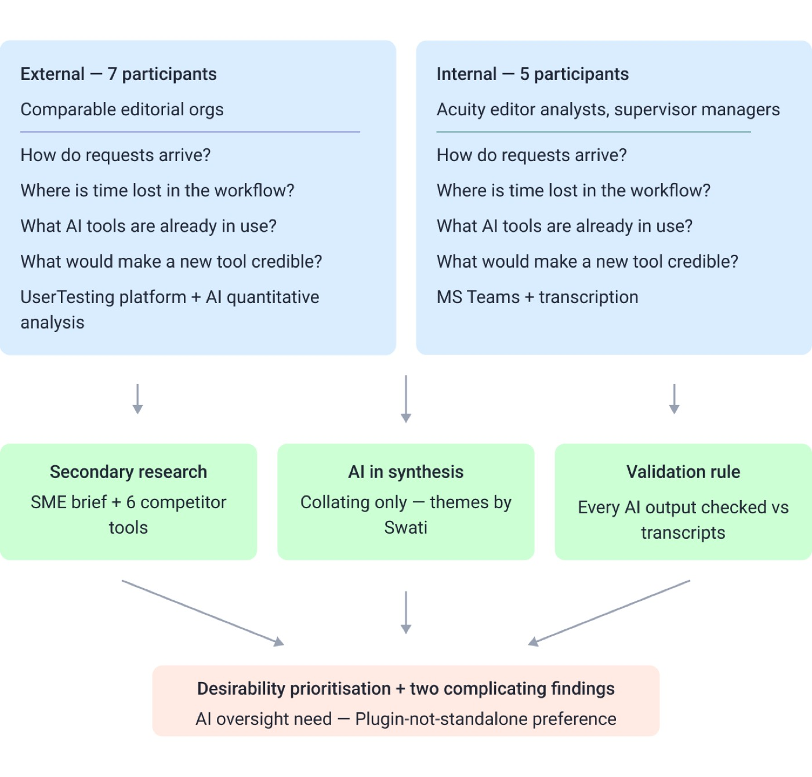
Core interview questions
- How do editing requests arrive, and how do you track them?
- Where does time get lost in the editing workflow?
- What tools do you already use, including AI tools?
- What would make a purpose-built editing tool credible enough to trust?
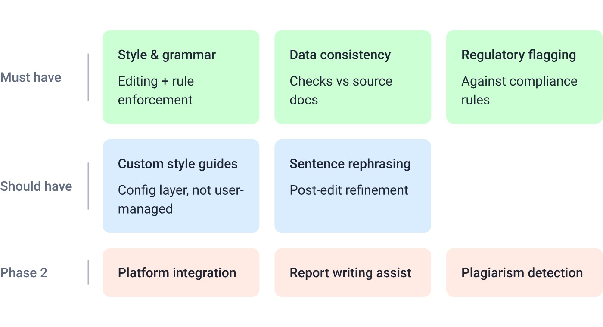
Custom style guides rated lower, as expected at the configuration layer rather than the user's. Sentence rephrasing and platform integration rated high but were Phase 2.
A gap I name plainly: no quality baseline existed. Users judged editing quality through review cycles, not metrics, so a before-and-after benchmark was impossible. The 40%+ turnaround reduction is a projection until post-launch data can validate it.
Method: themes were built bottom-up by affinity mapping, then checked by rereading source transcripts. AI tools helped collate and paraphrase during reporting only, and every AI-assisted output was checked against transcripts before findings were carried forward.
The strategic problem nobody had named
The research confirmed the operational pain and showed a structural gap. Every competitor had drawn the same boundary, and it was the wrong one. Regulatory checks and data validation happened outside any tool: manual, judgment-dependent and caught late. Several participants described data inconsistencies across charts and tables found after a document had already moved on.
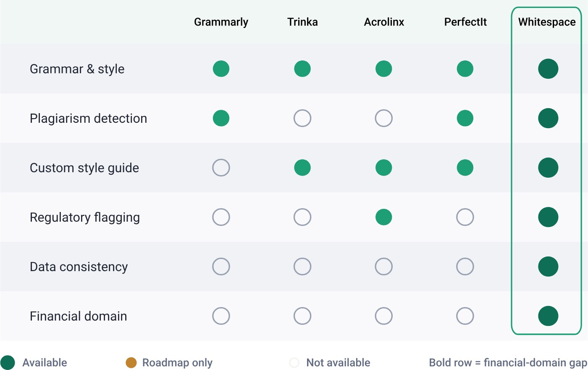
One limit: the competitive analysis was desk research, not hands-on testing. The matrix shows the market ceiling, not how tools perform in financial editing, or how close any competitor is to shipping its roadmap. The whitespace conclusion is sound but needs monitoring.
Finding a home: the product form problem
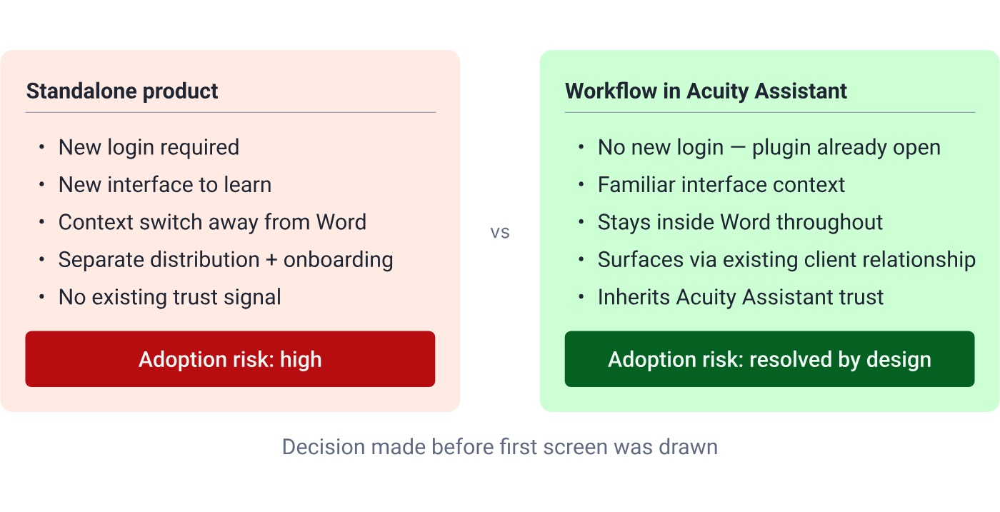
Before a screen could be designed there was a problem that had nothing to do with UI: AiSE couldn't exist as a standalone product.
Embedding it inside Acuity Assistant solved adoption before design started. Infrastructure and trust already existed, so clients would reach it as an extension of something they use. That fixed navigation patterns, components and visual language, and the work became extending coherently instead of originating. Under the hood AiSE runs through AgentFleet and Acuity Assistant: a powerful backend with a familiar front end.
I treated these decisions as hypotheses and tested them with 7 external users on usertesting.com.
Designing the workflow
The design covered three personas and every screen, from information architecture to a high-fidelity prototype. The Editor Analyst was the MVP focus: the person who starts an editing run, reviews the AI output and makes the final call on each change.
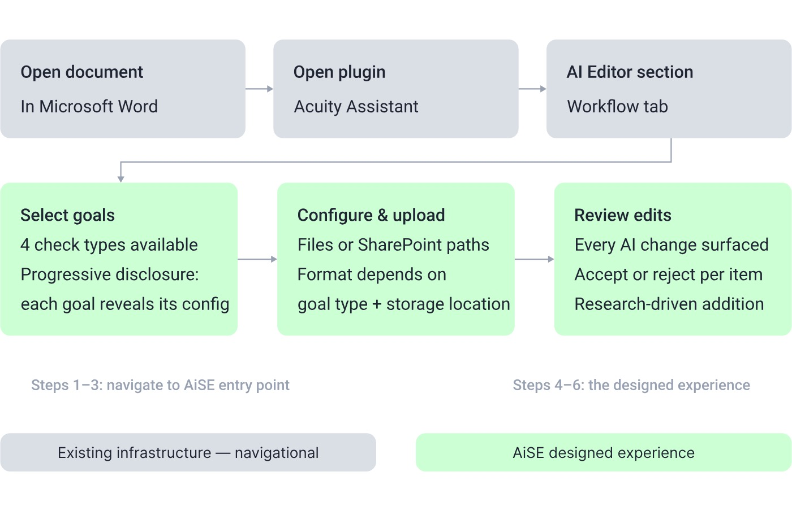
Design problem 1: goal selection
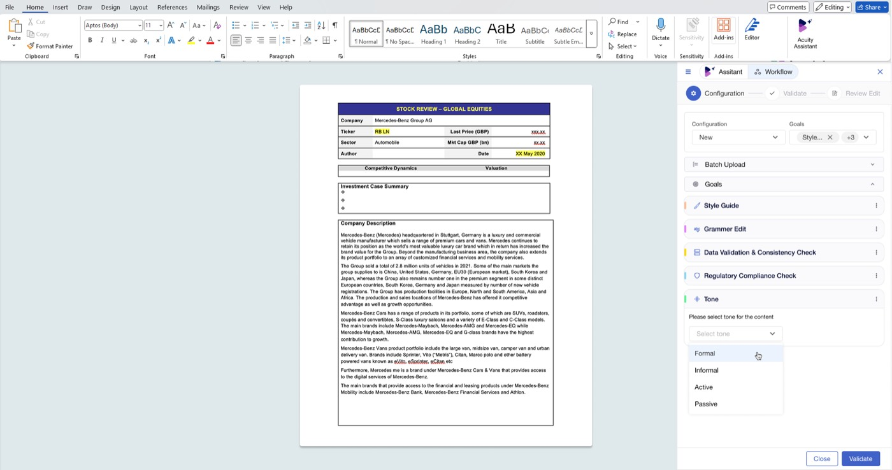
Four goals (style and grammar, data validation, regulatory flagging, plagiarism detection) each need different configuration. I used progressive disclosure: choosing a goal opens only its own section.
Design problem 2: upload configuration
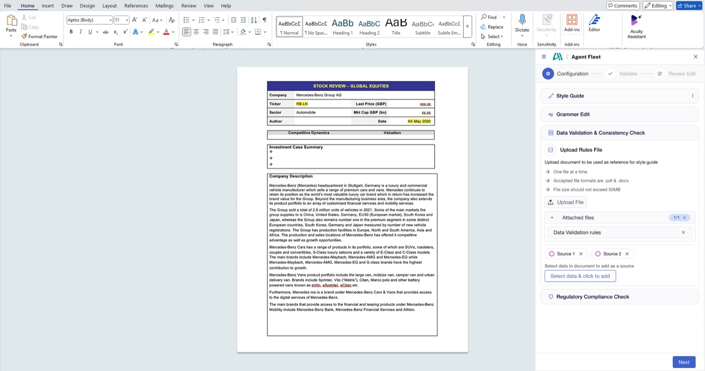
Each goal needs different reference material. Two parallel paths: direct upload for local files, and SharePoint path linking for shared drives. Regulatory guideline books and client style guides live on shared drives, and forcing a download would add steps and risk version drift.
Design problem 3: post-edit review
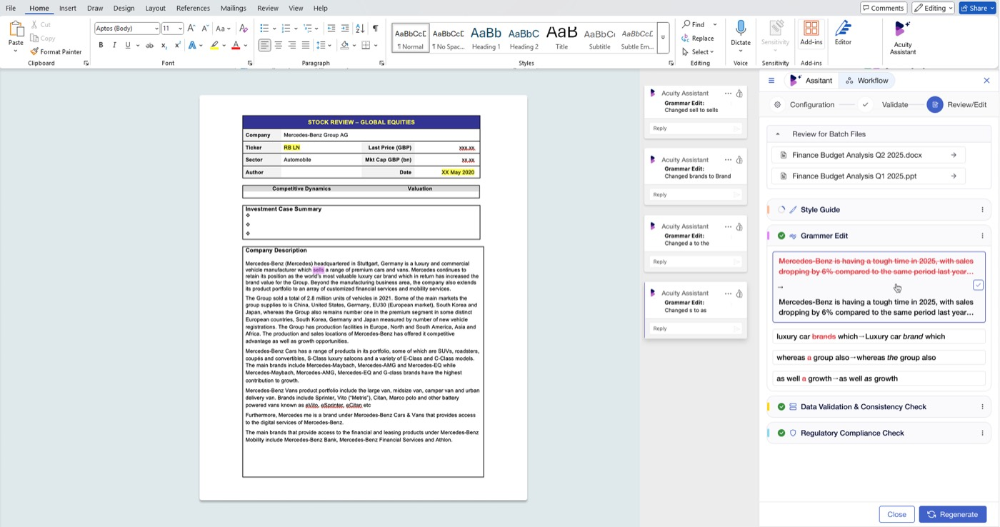
The most research-driven decision. Users needed human oversight of AI output, so the output could not be a finished document. Every suggested change is shown with its context, with accept and reject control per item.
The accept/reject step answers a clearly evidenced user need, not a feature request. It changed the structure of the flow.
Rephrasing sits on top as a post-edit refinement, a high-rated capability kept out of the core flow. All three personas (Editor Analyst, Requestor Analyst intake, Supervisor Manager review) work within Acuity Assistant's existing visual system.
One unresolved constraint: configuration needs the right files at hand. A missing style guide or an unlinked SharePoint path turns configuration into a blocker.
Testing at speed
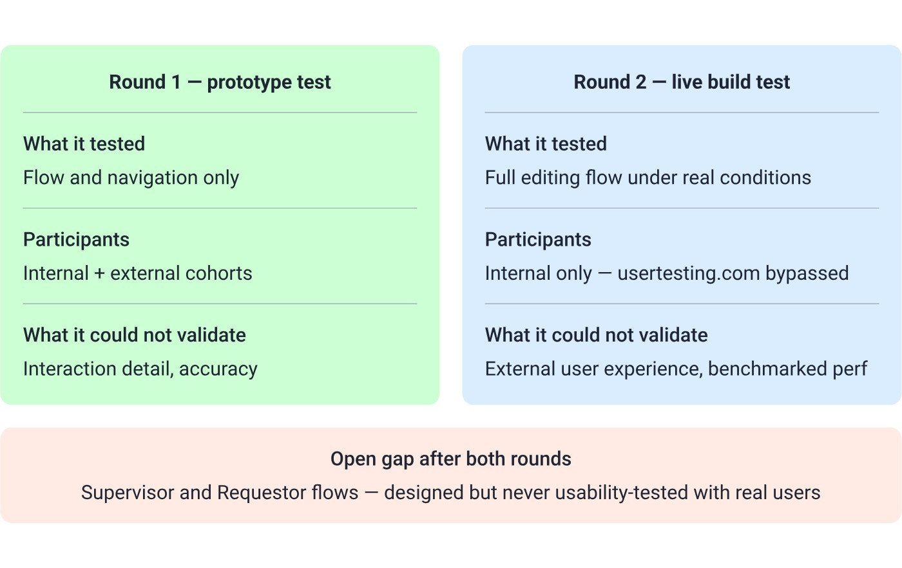
There were two rounds, and neither was as rigorous as the timeline deserved. For Round 2 I bypassed usertesting.com: internal users didn't know the platform, and setup would have used time we didn't have.
- Confirmed: the flow was intuitive and needed minimal training, which supports the embedding decision for the internal cohort.
- Surfaced: performance issues under real document conditions, and questions about output accuracy. Both need monitoring after launch, not discovery after launch.
What shipped and what it cost
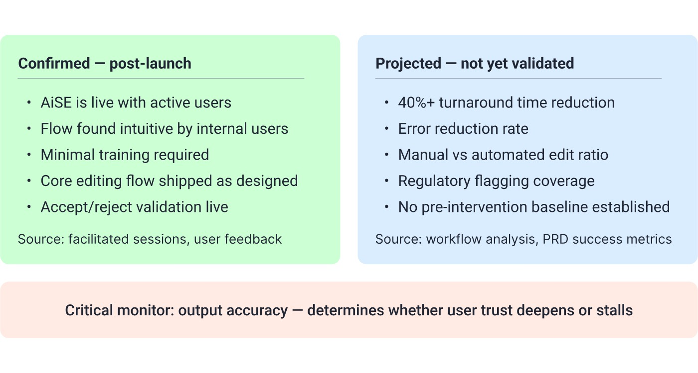
Most of what was designed shipped, in a domain where no direct competitor matches the same combination of capabilities. Output accuracy is the critical variable. Users here are quality gatekeepers under regulatory exposure, and a tool that flags wrongly or misses inconsistencies creates more work than it removes. The accept/reject layer lets users override AI errors, but only if they catch them.
The structural debt of a two-month timeline, named plainly:
- No second design iteration
- Supervisor and Requestor flows shipped without usability testing
- File format edge cases unresolved
None of it was hidden. It was the price of speed. Whether the capability set carries over to other document types and regulatory frameworks is still an open question.
What I would do differently
The research held and the core design decisions held. What is missing is the measurement set-up to know whether the outcome matched the ambition. That is a handoff failure, and mine to own as much as anyone's.
- Test the live build with external users. It is credible for the internal cohort and untested for a new client's editor meeting the plugin cold. The external cohort shaped the direction and should have seen the solution.
- Settle who measures success before launch. The PRD defines the metrics, but not who owns them, how often, or against what baseline. The 40% turnaround reduction sits unverified because nobody was accountable for collecting the data.
- Finish two things. Usability-test the Supervisor and Requestor flows, which were designed from user stories and domain logic. And design real error states for the configuration step: a missing regulatory document, a failed style-guide upload, an unresolvable SharePoint path.